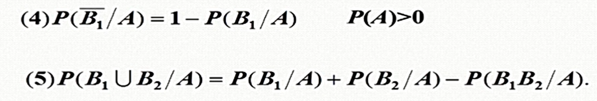
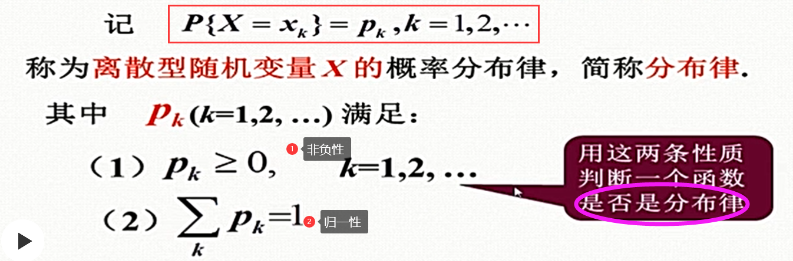
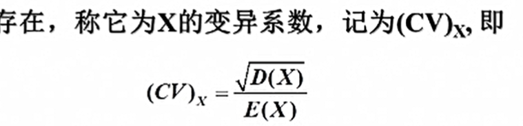

概率论
第一章 随机事件与概率
1.1随机事件、样本空间
实验E1：抛硬币，正面H，反面T，观察TH出现的情况。
实验E2：抛骰子，观察出现的点数。
实验E3：任取一批灯泡中的一只，测试它的寿命。
- 随机试验满足以下条件，用E表示
- 可以进行重复试验。
- 一次试验只有一个结果，且在试验前可以明确可能出现的结果（或者范围）。
- 每种结果的出现是不确定的。
- 样本空间，E的所有可能结果的集合，用S表示
- 样本点，S中一个元素。每次试验有且仅有一个样本点出现。
1.2随机事件
- 随机事件：S的子集，简称事件，通常使用ABC表示。
- 事件发生：当且仅当事件A中某个样本点出现，则事件发生。
几个特殊的事件：
- 基本事件：只由一个样本点组成。
- 必然事件：在试验中一定会发生的。
- 不可能事件：在试验中一定不会发生的，用空集表示。
事件的关系和运算：
（1）关系：
- 包含关系：若A发生，则B一定发生——B包含A，A是 B的子事件。

- 相等关系：A包含B，且B包含A——A与B等价。
（2）运算：
- 和事件：事件A和事件B至少有一个发生，
- 积事件：事件A和事件B同时发生，
性质：
- 互斥事件（互不相容事件）：事件A和B不能同时发生，即满足
- 对立事件：满足
- 差事件：事件A发生，事件B不发生——记作
事件运算规律：
1.3随机事件的概率
频率：在n次试验中，事件A出现了na次，则事件A的频率fna=na/n
- 频率具有随机波动性。
- 当n增大，频率f呈现稳定性。
频率的性质：
概率：利用频率的稳定性，可以得到，当n趋于无穷，则频率f=概率p。
概率的定义
满足以下三个条件，即可以作为概率：
概率的性质
1.4古典概率模型
古典概型的定义
如何计算古典概型的概率？
（1）先写出样本空间，n=S中的样本点个数。
（2）分别写出时间A包含的样本点，k=A中包含的样本点个数。
（3）计算概率P=k/n。
1.5条件概率
条件概率的公式：
条件概率的性质：
（1）非负性、规范性、可列可加性

计算方法：
（1）列出样本空间。
（2）分别列出事件A、B、AB……的样本点。
（3）使用条件概率公式进行计算。
乘法公式<---条件概率公式
全概率公式<---乘法公式
划分的概念：将S划分为n个互斥的区域。
Bayes贝叶斯公式<---乘法公式/全概率公式
1.6事件的独立性
两个事件的独立性：
事件A发生，并不影响事件B；事件B发生，也不影响事件A。
判断两个事件相互独立：
1.定义法
2.定理法
三个事件的独立性：
多个事件的独立性：
注意：两两独立和相互独立的区别和联系。
第二章 随机变量及其概率分布
2.1随机变量
随机变量的概念：
将试验结果数量化表示，即随机变量，数学上就是一个函数f。
随机变量的分类：
2.2离散型随机变量及其分布

离散型随机变量的表示方法：
求分布律步骤：
（1）确定X可能的取值。
（2）分别讨论不同X的值下，概率P(X)的值。
（3）合并X相同的概率。
（4）生成分布律的列表或者公式。
数学规律
三种重要的离散型随机变量
- 两点分布（0-1分布）
*X的取值只有0和1两种。
- 二项分布
*贝努利实验：一次试验实验两种可能的结果，即S只有2个样本点。
*n重贝努利实验：将贝努利实验独立重复n次。
*二项分布：n重贝努利实验中，事件A发生的次数为随机变量X。则X服从二项分布。
*二项分布--->进行n次贝努利实验；两点分布--->进行1次贝努利实验。
- 泊松分布Poission
*计算需要通过查表进行。
*二项分布与泊松分布的关系：
当n很大，p很小时，泊松分布可以代替二项分布。
*附表3
2.3连续型随机变量及其概率分布
连续型随机变量x定义：
*f(x)称为概率密度函数，简称概率密度、密度。
概率密度函数f(x)的性质：
进一步理解概率密度f(x):
*f(x)不是概率，但f(x)越大，则随机变量x在某一点出现的概率就越大。
*在这里，概率为0的事件不一定是不可能事件，概率为1的事件不一定是必然事件。
几种重要的连续型随机变量
- 均匀分布
*若区间x1、x2落在区间[a, b]内，且x1、x2的区间长度相等，则两区间的概率相等。
*均匀分布的概率和区间长度成正比，和区间位置无关：

- 指数分布
*无记忆性：
- 正态分布
*性质：
*标准正态分布：
2.4随机变量的分布函数
分布函数：
*分布函数即随机变量x在某一区间内出现的概率。
*P{X > a} = 1 - F(a)
*
分布函数的性质：

*以上性质也可以用于判断分布函数。
重要公式：
离散型随机变量的分布函数：
*求法：
即将小于等于x的随机变量的概率求和。
*是一个单调不减的阶梯状函数。
*
*
*分布函数x的区间划分都是左闭右开右连续的。
连续型随机变量的分布函数：
*求法：
*，提供了使用分布函数求密度函数的方法。
*：
方法一：已知密度函数->求x在某一区间的概率
密度函数积分
方法二：已知分布函数->求x在某一区间的概率
分布函数相减
*两个重要的分布函数
- 均匀分布的分布函数
- 指数分布的分布函数
2.5二维随机变量
二维随机变量
将S中取出两个样本点，组成一个二维向量(X,Y)，构成了二维随机变量，X和Y之间存在一定关系。
离散型二维随机变量
分布律/联合分布律：
联合分布律性质：
- 非负性
- 归一性
连续型二维随机变量
*则f(x,y)为联合概率密度函数。
*
两个常见的二维分布
- 均匀分布
*均匀分布的概率和面积成正比，与区域的位置和形状无关。
- 二维正态分布
二维随机变量的分布函数
*定义：分布函数即随机变量出现在某一面积的概率。
*，联合分布函数
*求法：
- 二维离散型随机变量
- 二维连续型随机变量
二维随机变量分布函数的性质
*关于性质（4）的理解：
P{x1<X<=x2; y1<Y<=y2} = [F(x2, y2)-F(x2, y1)] - [F(x1,y2)-F(x1,y1)]
2.6边缘分布
边缘分布：x的y各自的分布，和(x,y)的分布之间的关系。
离散型随机变量的边缘分布律
- X的边缘分布律：
 =Pi.
=Pi.- Y的边缘分布律：
由联合分布，可以求出边缘分布；但边缘分布，却不能求出联合分布。
连续型随机变量的边缘分布
- X的边缘密度函数
- Y的边缘密度函数
2.7条件分布
离散型随机变量的条件分布：

*性质：非负性、归一性
*根据定义：可以由边缘分布、联合分布律，可以求出条件分布。
连续型随机变量的条件分布：
条件分布与条件密度的关系：
2.8相互独立的随机变量
两个事件相互独立：
若P(AB) = P(A)P(B)，则事件A、B独立。
两个离散型随机变量相互独立：
联合分布<=>X的边缘分布*Y的边缘分布
两个连续型随机变量相互独立：
2.9随机变量函数的分布
已知随机变量X的分布，如何求Y=g(x)的分布？
离散型随机变量函数的分布：
（1）将分布律中的X替换为Y。
（2）将分布律中的Px替换为Py。
（3）若Y有值相同的，则将Py合并。
连续型随机变量函数的分布：
Z=X+Y的分布
已知f(x)、f(y)，求f(z)？
即z的概率密度函数=（x概率密度函数与y概率密度函数）的积分
由于X，y具有对称性：
Z1 = max(X,Y) 和 Z2 = min(X,Y)的分布
第三章 随机变量的数字特征
3.1数学期望——E(x)平均值
离散型随机变量的数学期望：
*x为权值，p为概率。
*绝对收敛：要求E(x)的值和求和顺序无关。
*泊松分布的数学期望：E(x)=入。
*二项分布的数学期望：E(x)=np。
连续型随机变量的数学期望：
*均匀分布的数学期望：E(x)=(a+b)/2。
*指数分布的数学期望：E(x)=。
*并非所有随机变量X都存在数学期望。
随机变量函数的数学期望和数学期望的性质：

*提供了X的分布，即可求出g(x)的分布。
推广：（注意前提是绝对收敛）
- 离散型：
- 连续型：
性质：
3.2方差——D(x)离散程度
方差定义：
方差计算及其性质：
- 计算公式
- 简化公式
*服从两点分布：E(x)=p，D(x)=p(1-p)
*服从泊松分布：E(x)=D(x)=入
*服从均匀分布：E(x)=(a+b)/2，D(x)=[(b-a)^2]/12
*服从指数分布：
*服从二项分布：E(x)=np，D(x)=np(1-p)
- 方差的性质
3.3协方差与相关系数
//描述X和Y之间关系的数字特征
协方差：
*性质：
*计算公式：
*若X和Y独立，则Cov(X,Y)=0
*Cov(X,X)=D(x)
*
相关系数：
*性质：
*XY独立，则XY不相关
3.4随机变量的另外几个数字特征
- 原点矩
- 中心矩
- 混合原点矩
- 混合中心矩
- 分位数
- 变异系数

3.5切比雪夫不等式与大数定理
- 马尔科夫不等式
- 契比雪夫不等式
*D(x)越小，则事件概率越大，即随机事件集中在期望附近的可能性越大。
- 依概率收敛
- 弱大数定理（独立同分布大数定理）
*X-u是指一个随机事件，当n趋于无穷，则这个事件概率为1.
*证明了算术平均接近数学期望，说明算术平均值具有稳定性。
- 伯努利大数定理
*证明当实验次数足够多，则概率和频率有较大偏差的概率很小。
*从而证明了事件发生频率可以代替概率。
- 辛钦大数定律
大数定律以严格的数学形式，表达了平均结果的稳定性。